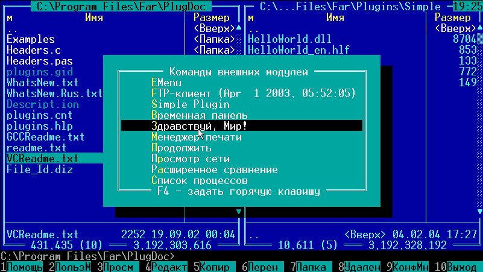
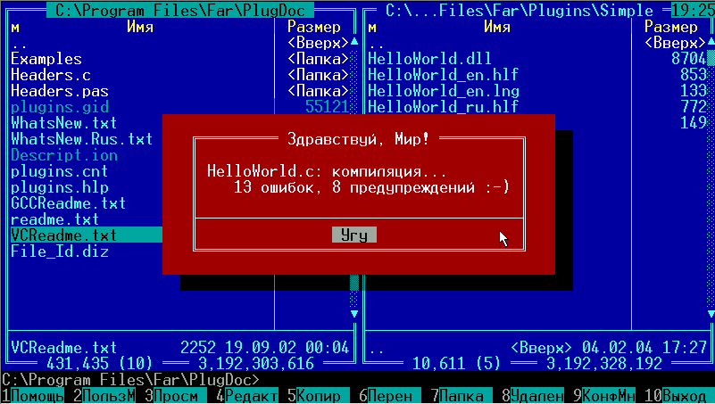
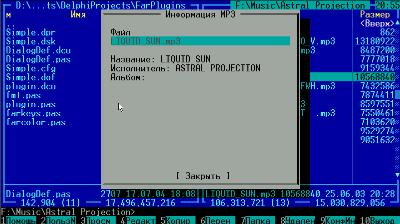

Gigabyte, 2004
 http://www.gigabyte.iatp.org.ua
http://www.gigabyte.iatp.org.ua
Gigabyte, 2004
http://www.gigabyte.iatp.org.ua
 Замечание
Замечание
Для начала откроем директорию в которой установлен FAR и поищем то, что могло бы нам пригодится при разработке плагинов. Здесь мы обнаружим архив PlugDoc.rar и распакуем его в отдельный каталог.
От IS: здесь и далее по тексту вместо "PlugDoc.rar" следует читать "FarManager17хDevPack".
Теперь можно более детально разобраться с содержимым этого архива:
Из других полезных вещей, на которые вам следует обратить внимание можно назвать файл справки plugins.chm в котором достаточно подробно описаны все возможности по использованию функций FAR-а, к которым имеет доступ плагин.
Для беглого ознакомления с техникой разработки плагинов для FAR-a нам будет достаточно заглянуть в исходник HelloWorld.pas, расположенный в Examples\HelloWorld. Но его точно будет недостаточно для написания более менее полезных модулей.
И поэтому после HelloWorld мы разберемся с задачей написания просмотрщика ID3 тегов в MP3 файлах.
Как уже говорилось в каталоге Expamples\HelloWorld есть исходник простенького плагина, с которого мы и начнем изучение расширений для FAR-a.
Итак, скомпилировав файл HelloWorld.pas (а это можно сделать написав в командной сроке "dcc32 helloworld.pas") мы получим файл библиотеки HelloWorld.dll. который вместе с дополнительными файлами (*.lng и *.hlf) поместить в отдельную папку каталога Plugins который размещается в директории FAR-a (к примеру C:\Program Files\Far\Plugins\Simple\). Далее, следуя рекомендациям из справки и дополнительных файлов из архива PlugDoc.rar, мы закрываем FAR и открываем его снова (дабы он обнаружил наш вновь созданный плагин). Хотя лично я просто открываю еще одну его копию. Теперь для просмотра результатов наших титанических усилий мы в заново открытом FAR-e жмем F11 и внимательно изучаем список подключенных модулей (рис.1). Наш плагин в этом списке выведен под названием "Здравствуй, Мир!". При нажатии на него появляется следующее предупреждение (рис.2).


Реализация этого модуля довольно проста. Если взглянуть на исходник HelloWorld.pas, то там мы увидим:
Остановимся на каждом пункте более подробно.
Процедура SetStartupInfo.
procedure SetStartupInfo(var psi: TPluginStartupInfo); stdcall; begin Move(psi, FARAPI, SizeOf(FARAPI)); end;
Как уже говорилось, она вызывается 1 раз при загрузке плагина и передает ему всю необходимую информацию в параметре psi. Параметр psi в свою очередь содержит список всех жизненно важных функций:
TPluginStartupInfo = packed record
StructSize: integer;
ModuleName: packed array[0..Pred(NM)] of char;
ModuleNumber: integer;
RootKey: PChar;
Menu: TFarApiMenu;
Dialog: TFarApiDialog;
Message: TFarApiMessage;
GetMsg: TFarApiGetMsg;
Control: TFarApiControl;
SaveScreen: TFarApiSaveScreen;
RestoreScreen: TFarApiRestoreScreen;
GetDirList: TFarApiGetDirList;
GetPluginDirList: TFarApiGetPluginDirList;
FreeDirList: TFarApiFreeDirList;
Viewer: TFarApiViewer;
Editor: TFarApiEditor;
CmpName: TFarApiCmpName;
CharTable: TFarApiCharTable;
Text: TFarApiText;
EditorControl: TFarApiEditorControl;
FSF: PFarStandardFunctions;
ShowHelp: TFarApiShowHelp;
AdvControl: TFarApiAdvControl;
InputBox: TFarApiInputBox;
DialogEx: TFarApiDialogEx;
SendDlgMessage: TFarApiSendDlgMessage;
DefDlgProc: TFarApiDefDlgProc;
Reserved: array[0..1] of DWORD;
end;
Большинство из которых отвечают за вызов тех или иных сервисных функций самого FAR-a. Так функции Menu, Message, Dialog, Control отвечают за вызов соответственно указателей на меню, вывод информационных сообщений, создание диалогов, получение информации об имеющихся в наличии панелях (Файловая, Информационная, Временная:). Другие же функции позволяют выводить текст, справку, открывать редактор и просмотрщик файлов. Кроме этих функций используется также и другой набор из т.н. Стандартных функций (FSF:PFarStandardFunctions), в который включены функции по работе со строками (сравнение, преобразование:), с буфером обмена, с таблицами перекодировок символов и т.п.
Процедура GetPluginInfo. В модуле HelloWorld реализована следующим образом:
procedure GetPluginInfo(var pi: TPluginInfo); stdcall; begin pi.StructSize:= SizeOf(pi); pi.Flags:= PF_EDITOR; PluginMenuStrings[0]:= GetMsg(MTitle); pi.PluginMenuStrings:= @PluginMenuStrings; pi.PluginMenuStringsNumber:= 1; end;
Здесь происходит "заполнение анкеты" нашего плагина (т.е. структуры TPluginInfo) путем указания флага и названия нашего модуля. Кроме этих параметров можно также заполнить параметры:
Функция OpenPlugin вызывается каждый раз при запуске плагина тем или иным образом. Здесь размещается код, который собственно и отвечает за отображение и деятельность нашего модуля:
function OpenPlugin(OpenFrom: integer; Item: integer): THandle; stdcall;
var
Msg: array[0..6] of PChar;
begin
Msg[0]:= GetMsg(MTitle);
Msg[1]:= GetMsg(MMessage1);
Msg[2]:= GetMsg(MMessage2);
Msg[3]:= GetMsg(MMessage3);
Msg[4]:= GetMsg(MMessage4);
Msg[5]:= #01#00; // separator line
Msg[6]:= GetMsg(MButton);
FARAPI.Message(FARAPI.ModuleNumber, // PluginNumber
FMSG_WARNING or FMSG_LEFTALIGN, // Flags
'Contents', // HelpTopic
@Msg, // Items
7, // ItemsNumber
1); // ButtonsNumber
result:= INVALID_HANDLE_VALUE;
end;
Здесь в первых строках идет заполнение массива строк, из которых будет состоять наше сообщение. Значения этих строк берутся из стандартного языкового файла (т.е. файла с расширением lng расположенного в той же директории, что и модуль и соответствующего используемому в FAR языку). Далее происходит вызов стандартной функции Message, которая и отображает окно сообщения. Присвоение результату функции значения INVALID_HANDLE_VALUE необходимо для того, чтоб потом не возится с освобождением ресурсов, которые выделяет FAR под создание новой панели для нашего плагина. В других же случаях необходимо будет реализовать еще и процедуру ClosePlugin, которая теоретически принимает дескриптор, созданный в функции OpenPlugin, и освобождает соответствующие ему ресурсы.
Теперь уже можно перейти от баловства к созданию более интересного и практичного плагина.
Для приготовления этого блюда нам понадобится:
После сбора всех ингредиентов нам следует запустить Delphi и создать в нем новый проект-библиотеку. В эту библиотеку мы будет поочередно носить все функции рассмотренные в предыдущей главе.
Сперва мы сохраним указатель на сервисные функции FAR-a:
library Simple; uses windows, plugin, DialogDef in 'DialogDef.pas'; procedure SetStartupInfo(var psi: TPluginStartupInfo); stdcall; begin Move(psi, FARAPI, SizeOf(FARAPI)); end;
Далее добавляем название нашего модуля в список модулей вызываемых клавишей F11:
var PluginMenuStrings: array[0..0] of PChar; procedure GetPluginInfo(var pi: TPluginInfo); stdcall; begin pi.StructSize:= SizeOf(pi); pi.Flags:= PF_EDITOR; PluginMenuStrings[0]:= 'Simple Plugin'; pi.PluginMenuStrings:= @PluginMenuStrings; pi.PluginMenuStringsNumber:= 1; end;
Теперь реализуем собственно отображение информации на экране:
function OpenPlugin(OpenFrom: integer; Item: integer): THandle; stdcall; begin CreateDialog; FARAPI.Dialog(FARAPI.ModuleNumber, -1, -1, 40, 20, nil, @DialogItems, DialogItemsCount); result:= INVALID_HANDLE_VALUE; end;
Здесь главную роль играет объявленная в модуле DialogDef функция, которая создает элементы диалога, который отображается посредством функции Dialog.
Сам вид уже готового диалога показан на рисунке 3. Как видим наш диалог состоит из 7-ми элементов:

Все эти элементы создаются путем заполнения массива структур TfarDialogItem, который имеет довольно много различных параметров, не востребованных при реализации данного плагина. И поэтому мы заполним только самые нужные из полей т.е. координаты, тип поля, название каждого элемента:
with DialogItems[0] do
begin
ItemType:=DI_DOUBLEBOX;
X1:=0;Y1:=0;
X2:=39;Y2:=19;
Focus:=0;
Flags:=DIF_BOXCOLOR;
S:=FARAPI.GetMsg(FARAPI.ModuleNumber,0);
with Data do
ZeroMemory(@Data,SizeOf(Data));
with Data do
Move(Pointer(S)^,Data,Length(S));
end;
Как видите, название панели (как и других элементов) мы берем из языкового файла, что существенно облегчит нам трансляцию нашего плагина на другие языки.
Создание других элементов также не является более трудной задачей, только при назначении их координат следует помнить о том, что они задаются в клиентской системе координат нашей панели.
Теперь возьмемся за заполнение названий наших компонентов. Так для заполнения элемента, который отображает название текущего файла мы используем функцию FARAPI.Control в таком контексте:
FARAPI.Control(INVALID_HANDLE_VALUE,FCTL_GETPANELINFO,@P);
Такой код позволяет нам в переменной P получить указатель на текущую панель, которой в нашем случае является файловая панель. В чем мы еще раз убеждаемся сделав в коде проверку:
if @P<>nil then
if (P.PanelType=PTYPE_FILEPANEL) and (P.ItemsNumber>0) then
begin
S:=P.PanelItems^[P.CurrentItem].FindData.cFilename;
with Data do
ZeroMemory(@Data,SizeOf(Data));
with Data do
Move(Pointer(S)^,Data,Min(512,Length(S)));
end;
Далее, как видно из кода, мы запрашиваем информацию о текущей позиции курсора и считываем информацию о текущем файле. Эти данные (точнее имя текущего файла) мы и передаем в параметр Data нашего элемента, а также используем его для извлечения ID3 тега посредством компонента TvID3v1:
id3:=TJvId3v1.Create(nil);
try
id3.FileName:=S;
with DialogItems[3] do
begin
ItemType:=DI_TEXT;
X1:=2;Y1:=5;X2:=35;
if id3.TagPresent then S:=FARAPI.GetMsg(FARAPI.ModuleNumber,2)+': '+id3.SongName
else S:='No mp3 tag found';
with Data do
ZeroMemory(@Data,SizeOf(Data));
Move(Pointer(S)^,Data,35);
S:='';
end;
Если же данный файл не содержит тегов или это вообще не тот файл, то мы просто записываем на место данных строку "No mp3 tag found".
В конце модуля мы на всякий случай очищаем массив DialogItems:
begin ZeroMemory(@DialogItems,SizeOf(DialogItems)); end.
Инсталляция этого плагина реализуется тем же образом, что HelloWorld. Но перед этим следует дополнительно создать языковый файл с указанием названий всех элементов нашего диалога. К счастью программистов и простых пользователей языковый файл FAR - это простой текстовый файл, в котором в отдельных строках размещаются названия отдельных элементов. Первая строка заполняется служебным идентификатором <.Language>, в который записывается название используемого языка. В нашем случае мы создадим языковый файл следующего содержания:
.Langugage = Russian,Russian (Русский) "Информация MP3" "Файл" "Название" "Исполнитель" "Альбом" "Закрыть"
Кроме того тут есть возможность использования комментариев, а также символов табуляции, конца строки и т.п. Которые записываются в стиле C/C++.
Естественно, нет предела совершенству и эта маленькая библиотека еще очень далека от него. Ее возможностей хватит пожалуй только то, чтоб быстро упорядочить ваши mp3 файлы, не выходя из любимого файлового менеджера. К возможным последующим усовершенствованиям этого плагина можно отнести добавление дополнительных ID3 полей и возможность их редактирования, а также более быстрый вызов этой надстройки посредством, скажем, горячих клавиш, или вывод информации на информационную панель (Ctrl+L), но это уже тема для отдельной статьи.
Листинг - Simple.dpr
{$APPTYPE CONSOLE}
{$MINENUMSIZE 4}
library Simple;
uses
windows,
plugin,
DialogDEf in 'DialogDEf.pas';
procedure SetStartupInfo(var psi: TPluginStartupInfo); stdcall;
begin
Move(psi, FARAPI, SizeOf(FARAPI));
end;
var
PluginMenuStrings: array[0..0] of PChar;
procedure GetPluginInfo(var pi: TPluginInfo); stdcall;
begin
pi.StructSize:= SizeOf(pi);
pi.Flags:= PF_EDITOR;
PluginMenuStrings[0]:= 'Simple Plugin';
pi.PluginMenuStrings:= @PluginMenuStrings;
pi.PluginMenuStringsNumber:= 1;
end;
function OpenPlugin(OpenFrom: integer; Item: integer): THandle; stdcall;
begin
CreateDialog;
FARAPI.Dialog(FARAPI.ModuleNumber,-1,-1,40,20,nil,@DialogItems,DialogItemsCount);
result:= INVALID_HANDLE_VALUE;
end;
exports
SetStartupInfo,GetPluginInfo,OpenPlugin;
end.
Листинг - DialogDef.pas
unit DialogDef;
interface
uses plugin,windows;
Const DialogItemsCount = 7;
var FARAPI: TPluginStartupInfo;
var DialogItems: array[0..DialogItemsCount-1] of TFarDialogItem;
procedure CreateDialog;
implementation
uses jvid3v1,DebugUnit;
function Min(A,B:Integer):Integer;
begin
Result:=A;
if A>B then Result:=B;
end;
procedure CreateDialog;
var S:String;Mem:Pointer;
P:TPanelInfo;
id3:TJvId3v1;
begin
with DialogItems[0] do
begin
ItemType:=DI_DOUBLEBOX;
X1:=0;Y1:=0;
X2:=39;Y2:=19;
Focus:=0;
Flags:=DIF_BOXCOLOR;
S:=FARAPI.GetMsg(FARAPI.ModuleNumber,0);
with Data do
ZeroMemory(@Data,SizeOf(Data));
with Data do
Move(Pointer(S)^,Data,Length(S));
end;
with DialogItems[1] do
begin
ItemType:=DI_TEXT;
X1:=2;Y1:=2;
S:=FARAPI.GetMsg(FARAPI.ModuleNumber,1);
X2:=Length(S);
with Data do
ZeroMemory(@Data,SizeOf(Data));
with Data do
Move(Pointer(S)^,Data,Length(S));
end;
with DialogItems[2] do
begin
ItemType:=DI_EDIT;
X1:=2;Y1:=3;
X2:=37;
Focus:=1;
DefaultButton:=True;
GetMem(Mem,2048);
try
FARAPI.Control(INVALID_HANDLE_VALUE,FCTL_GETPANELINFO,@P);
finally
if @P<>nil then
if (P.PanelType=PTYPE_FILEPANEL) and (P.ItemsNumber>0) then
begin
S:=P.PanelItems^[P.CurrentItem].FindData.cFilename;
with Data do
ZeroMemory(@Data,SizeOf(Data));
with Data do
Move(Pointer(S)^,Data,Min(512,Length(S)));
end;
FreeMem(Mem,2048);
end;
end;
id3:=TJvId3v1.Create(nil);
try
id3.FileName:=S;
with DialogItems[3] do
begin
ItemType:=DI_TEXT;
X1:=2;Y1:=5;X2:=35;
if id3.TagPresent then S:=FARAPI.GetMsg(FARAPI.ModuleNumber,2)+': '+id3.SongName
else S:='No mp3 tag found';
with Data do
ZeroMemory(@Data,SizeOf(Data));
Move(Pointer(S)^,Data,35);
S:='';
end;
with DialogItems[4] do
begin
ItemType:=DI_TEXT;
X1:=2;Y1:=6;X2:=35;
if id3.TagPresent then S:=FARAPI.GetMsg(FARAPI.ModuleNumber,3)+': '+id3.Artist
else S:='No mp3 tag found';
with Data do
ZeroMemory(@Data,SizeOf(Data));
Move(Pointer(S)^,Data,35);
S:='';
end;
with DialogItems[5] do
begin
ItemType:=DI_TEXT;
X1:=2;Y1:=7;X2:=35;
if id3.TagPresent then S:=FARAPI.GetMsg(FARAPI.ModuleNumber,4)+': '+id3.Album
else S:='No mp3 tag found';
with Data do
ZeroMemory(@Data,SizeOf(Data));
Move(Pointer(S)^,Data,35);
S:='';
end;
finally
id3.free;
end;
with DialogItems[6] do
begin
ItemType:=DI_BUTTON;
S:=FARAPI.GetMsg(FARAPI.ModuleNumber,5);
X1:=15;
X2:=Length(S);
Y1:=18;
Y2:=1;
Focus:=1;
DefaultButton:=True;
with Data do
ZeroMemory(@Data,SizeOf(Data));
with Data do
Move(Pointer(S)^,Data,Length(S));
S:='';
end;
end;
begin
ZeroMemory(@DialogItems,SizeOf(DialogItems));
end.
Листинг - Simple.lng
.Langugage = Russian,Russian (Русский) "Информация MP3" "Файл" "Название" "Исполнитель" "Альбом" "Закрыть"